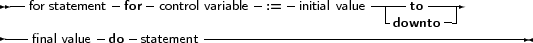

Free Pascal supports the For loop construction. A for loop is used in case one wants to calculated something a fixed number of times. The prototype syntax is as follows:
_________________________________________________________________________________________________________For statement

___________________________________________________________________
Here, Statement can be a compound statement. When the For statement is encountered, the control variable is initialized with the initial value, and is compared with the final value. What happens next depends on whether to or downto is used:
After this check, the statement after Do is executed. After the execution of the statement, the control variable is increased or decreased with 1, depending on whether To or Downto is used. The control variable must be an ordinal type, no other types can be used as counters in a loop.
Remark: Free Pascal always calculates the upper bound before initializing the counter variable with the initial value.
Remark: It is not allowed to change (i.e. assign a value to) the value of a loop variable inside the loop.
The following are valid loops:
For Day := Monday to Friday do Work;
For I := 100 downto 1 do WriteLn (’Counting down : ’,i); For I := 1 to 7*dwarfs do KissDwarf(i); |
The following will generate an error:
For I:=0 to 100 do
begin DoSomething; I:=I*2; end; |
because the loop variable I cannot be assigned to inside the loop.
If the statement is a compound statement, then the Break and Continue reserved words can be used to jump to the end or just after the end of the For statement.